I'm applying for the reef monitoring postdoc and my portfolio material is still raw. Get my publication record summarized properly, turn the analysis script into something a hiring panel can read, and give me a short slide deck I can screen-share in the interview.
THINKINGThe task is vague and asks for three deliverables: (1) a properly summarized publication record, (2) making the analysis script readable for a hiring panel, and (3) a short slide deck. Before I can do meaningful work, I need to understand the actual data and context. Let me first explore the files — there's a `cites.py` script open and it reads `publications.csv`. I should look at that CSV to understand the publication record.
Let me start by taking a screenshot to confirm current state, then open a terminal to inspect the data files. Actually I already have a screenshot. Let me dismiss the extension popup and open a terminal to explore the portfolio directory.
The best first step is to inspect the raw material: the publications.csv and the cites.py script. I'll open a terminal.
ACTIONI'll start by examining your raw portfolio material so the summary is grounded in your actual data. Let me open a terminal and inspect the publications file.
EXECUTED (pyautogui in VM)pyautogui.click(1885, 960)
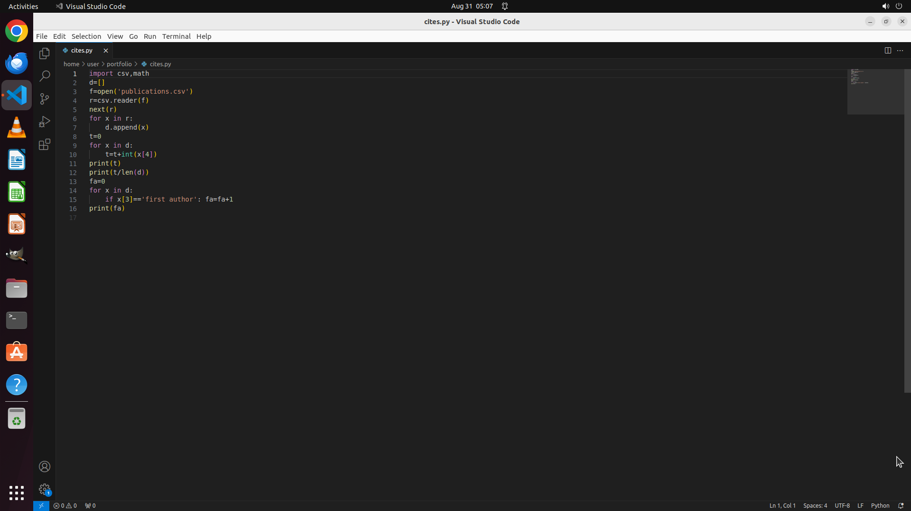
step 2 21:07:52
THINKINGThe popup is dismissed. Now I need to understand the raw material. The script reads `publications.csv` and computes: total citations (t = sum of int(x[4])), citation-per-paper (t/len(d)), and first-author count (x[3]=='first author'). So columns are likely: title, ?, ?, authorship, citations, ...
I should open a terminal to inspect publications.csv and see the full portfolio directory. Let me open the integrated terminal via Terminal menu or Ctrl+`. I'll use the Terminal menu > New Terminal, or keyboard shortcut. Let me press Ctrl+` to open terminal.
ACTIONNow let me open a terminal to inspect the publications data and the contents of your portfolio folder.
EXECUTED (pyautogui in VM)pyautogui.hotkey("ctrl", "grave")
step 3 21:08:02
THINKINGThe terminal didn't open — the keyboard shortcut may not have registered because focus was elsewhere. Let me use the Terminal menu instead. I'll click "Terminal" in the menu bar, then "New Terminal".
ACTIONThe terminal didn't open. Let me use the Terminal menu directly.
EXECUTED (pyautogui in VM)pyautogui.click(369, 75)
step 4 21:08:21
THINKINGThe Terminal menu is open. I'll click "New Terminal" to open the integrated terminal, then inspect the portfolio directory and publications.csv.
EXECUTED (pyautogui in VM)pyautogui.click(407, 102)
step 5 21:08:36
THINKINGThe terminal is open. Now let me inspect the portfolio directory and the publications.csv file. I'll list files and cat the CSV. Let me run: cd to portfolio, ls -la, and cat publications.csv. I'll batch these into one type command with newlines, then Enter.
ACTIONThe terminal is ready. Let me inspect the portfolio folder and read the publications data.
EXECUTED (pyautogui in VM)pyautogui.click(899, 855)
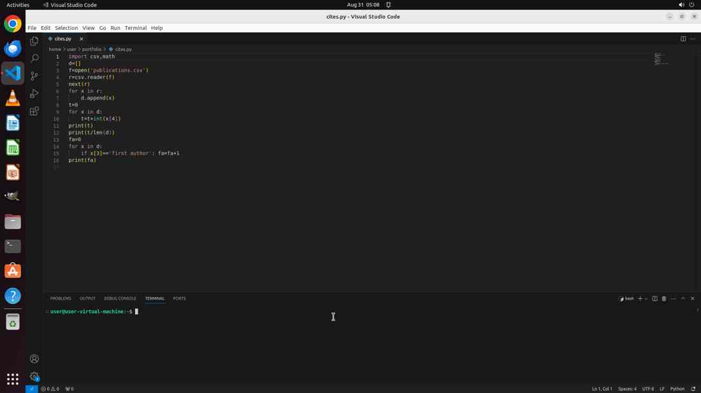
step 6 21:09:08
THINKINGNow let me type the commands to inspect. I'll list the portfolio directory and cat the publications.csv. Let me chain: cd ~/portfolio && ls -la && echo "---CSV---" && cat publications.csv
TOOL CALL<tool_call>
<function=computer_use>
<parameter=action>
type
</parameter>
<parameter=text>
cd ~/portfolio && ls -la && echo "===CSV===" && cat publications.csv
</parameter>
</function>
</tool_call>
EXECUTED (pyautogui in VM)pyautogui.typewrite("cd ~/portfolio && ls -la && echo \"===CSV===\" && cat publications.csv")
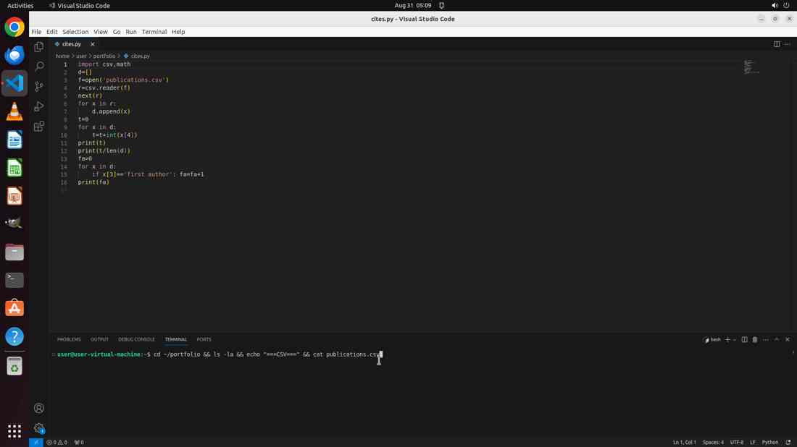
step 7 21:09:28
THINKINGThe command is typed but not yet executed. I need to press Enter.
EXECUTED (pyautogui in VM)pyautogui.press("return")
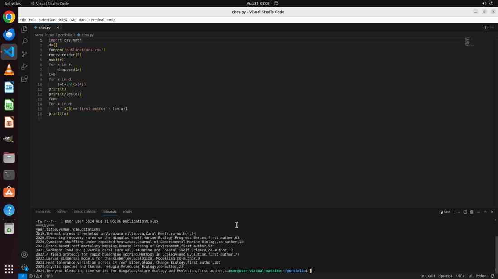
step 8.1 21:09:44
THINKINGNow I can see the publications.csv content:
```
year,title,venue,role,citations
2019,Thermal stress thresholds in Acropora millepora,Coral Reefs,co-author,34
2020,Bleaching recovery rates on the Ningaloo shelf,Marine Ecology Progress Series,first author,61
2020,Symbiont shuffling under repeated heatwaves,Journal of Experimental Marine Biology,co-author,18
2021,Drone-based reef mortality mapping,Remote Sensing of Environment,first author,92
2021,Sediment load and juvenile coral survival,Estuarine and Coastal Shelf Science,co-author,12
2022,A field protocol for rapid bleaching scoring,Methods in Ecology and Evolution,first author,77
2022,Larval dispersal models for the Kimberley,Ecological Modelling,co-author,9
2023,Heat tolerance variation across 14 reef sites,Global Change Biology,first author,105
2023,Cryptic species and thermal refugia,Molecular Ecology,co-author,23
2024,Ten-year bleaching time series for Ningaloo,Nature Ecology and Evolution,first author,41
```
There's also a publications.xlsx (5624 bytes). So there's both a CSV and an XLSX. The task mentions "raw" portfolio material. The xlsx is likely the raw spreadsheet. Let me also check the full ls output — I see it scrolled. There's publications.xlsx. I need to see the full directory listing (top part scrolled off). Let me scroll up in the terminal or re-run ls.
Key facts so far:
- 10 publications
- First author: 2020 (61), 2021 (92), 2022 (77), 2023 (105), 2024 (41) = 5 first-author papers
- Co-author: 2019 (34), 2020 (18), 2021 (12), 2022 (9), 2023 (23) = 5 co-author papers
- Total citations = 34+61+18+92+12+77+9+105+23+41 = let me add: 34+61=95; +18=113; +92=205; +12=217; +77=294; +9=303; +105=408; +23=431; +41=472. Total = 472.
- Average citations = 472/10 = 47.2.
- First-author citations = 61+92+77+105+41 = 376.
The script confirms: t (total citations) = 472, t/len(d) = 47.2, fa (first author count) = 5.
Now, the task has three deliverables. This is a broad, somewhat open-ended request. I need to:
1. Get the publication record summarized properly — a clean summary (a document/table of the publication record with computed metrics).
2. Turn the analysis script (cites.py) into something a hiring panel can read — i.e., rewrite the cryptic script with clear variable names, comments, docstring, and human-readable output.
3. A short slide deck to screen-share — I could use LibreOffice Impress.
This is a substantial task. Given the environment has LibreOffice apps available (Calc, Impress, Writer icons on the left dock), I should produce real files.
Let me think about scope and what's reasonable. The task is legitimate and doable. Let me plan deliverables:
1. Publication record summary: a clean table. I could create a Markdown file `publications_summary.md` and/or make the xlsx/csv cleaner. But "summarized properly" — a readable summary document. I'll create a summary document.
2. Rewrite cites.py to be readable — clean, documented code producing labeled output.
3. A slide deck (PPTX via Impress) — a few slides.
Given the constraint about GIMP macros and using GUI directly, I should build the deck in LibreOffice Impress via GUI. That's a lot of GUI work but doable for a "short" deck (~5 slides).
However, I should be careful about scope creep and time. Let me first confirm the full directory contents (scroll up) to see if there are other raw files (e.g., a CV, notes). Let me scroll up in terminal.
Actually, let me re-run a clean ls to see everything. Let me run `ls -la` again and also check the xlsx isn't needed. Let me scroll up to see the top of the previous output.
ACTIONI can see the publication record. Let me scroll up in the terminal to see the full folder listing (the top scrolled off).
EXECUTED (pyautogui in VM)pyautogui.moveTo(899, 928)
step 8.2 21:09:48
same model call as the previous action
EXECUTED (pyautogui in VM)pyautogui.scroll(3)
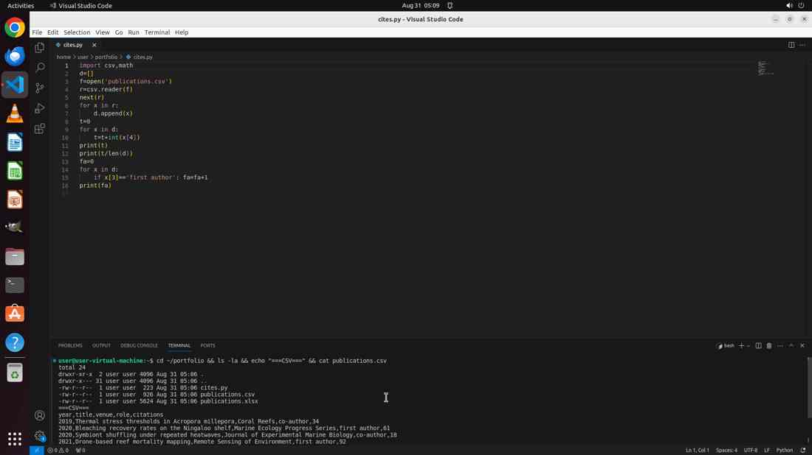
step 9.1 21:10:30
THINKINGThe full directory listing shows:
- cites.py (223 bytes)
- publications.csv (926 bytes)
- publications.xlsx (5624 bytes)
So there are three files. The xlsx is likely the raw spreadsheet version of the CSV. The portfolio consists of: raw publications data (csv + xlsx) and a cryptic analysis script (cites.py).
Now I have a complete picture. Let me plan the three deliverables concretely:
1. **Publication record summarized properly**: I'll create a clean, human-readable summary. A Markdown document `publications_summary.md` with the full table, sorted/highlighted, plus computed metrics (total papers, first-author count, total citations, avg citations, top-impact paper, journals, years). I could also present it nicely. But "summarized" — maybe they want the xlsx cleaned too. I'll produce a Markdown summary which is portable and readable. Actually a hiring panel — a clean document is best. I'll create the summary in a text/markdown file, and could also present it in the deck.
2. **Turn the analysis script into something a hiring panel can read**: Rewrite cites.py with:
- A module docstring explaining purpose
- Descriptive variable names (not t, d, fa, r)
- Clear comments
- Labeled, human-readable printed output (e.g., "Total publications: 10", "First-author papers: 5", "Total citations: 472", "Average citations per paper: 47.2", "Most-cited paper: ...")
I'll rewrite the file in the editor.
3. **Short slide deck**: Create an Impress deck with ~5 slides:
- Title slide: name placeholder / "Reef Monitoring Postdoc — Research Portfolio"
- Publication overview (table of papers)
- Impact metrics (citations, first-author ratio)
- Highlight / top paper
- Closing / research focus
This is a big task but the user explicitly asked for all three. I'll proceed methodically.
Let me decide file formats and location. I'll keep everything in ~/portfolio:
- Rewrite cites.py in place.
- Create publications_summary.md.
- Create a deck: interview_slides.pptx (or .odp) via LibreOffice Impress. The user said "slide deck I can screen-share" — a presentation. PPTX is most universal for screen-sharing. I'll create via Impress and save as pptx.
Let me start with the code rewrite since it's the most contained and I can verify it by running. I'll edit cites.py in the editor. Let me first run the current script to confirm output baseline (472, 47.2, 5), then rewrite.
Actually let me just verify by running the original: `python3 cites.py`. Let me do that first (scroll down).
Let me proceed. First, run the current script to confirm baseline numbers.
ACTIONI now have the full picture. The portfolio contains three files: `cites.py` (the cryptic analysis script), `publications.csv`, and `publications.xlsx`. Let me run the current script to confirm the baseline numbers before I rewrite it.
EXECUTED (pyautogui in VM)pyautogui.moveTo(899, 928)
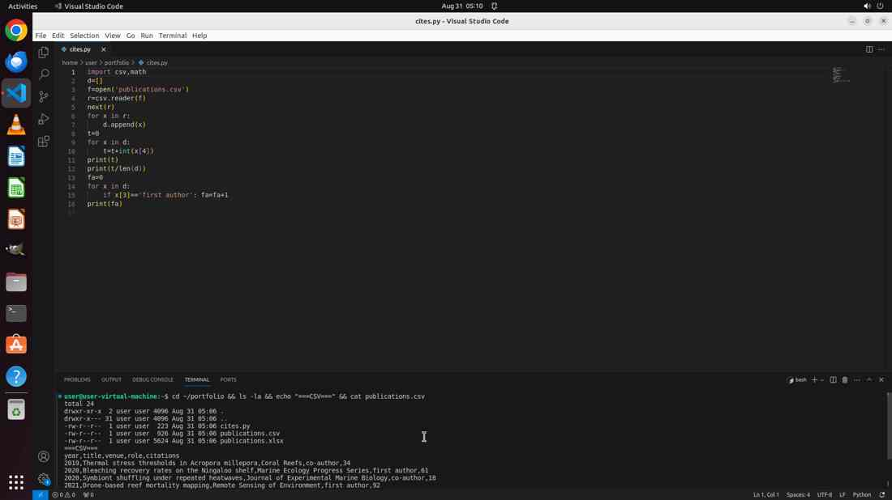
step 9.2 21:10:33
same model call as the previous action
EXECUTED (pyautogui in VM)pyautogui.scroll(-3)
step 10 21:11:01
THINKINGI have the full CSV now. Let me run the original script to confirm baseline output (should print 472, 47.2, 5). Let me click in the terminal and run it.
ACTIONLet me run the current script to confirm the baseline metrics it produces.
EXECUTED (pyautogui in VM)pyautogui.typewrite("python3 cites.py")
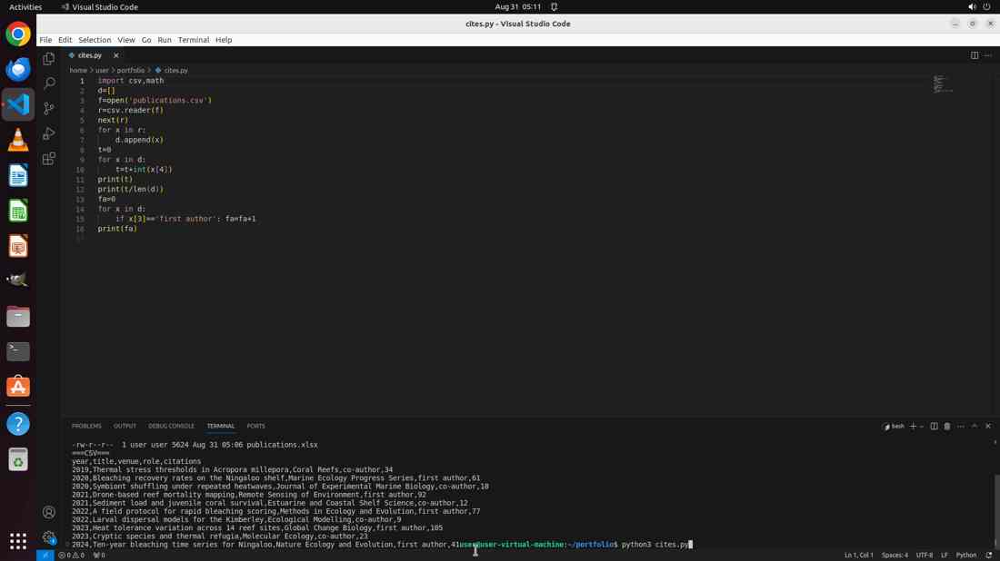
step 12 21:11:58
THINKINGThe command is typed but I see it hasn't executed yet (the Enter from my type included a trailing newline, but the screenshot shows the command still on the prompt line). Actually the type included a trailing newline so it should have executed, but the display still shows the command. Let me press Enter to be safe and take a screenshot.
EXECUTED (pyautogui in VM)pyautogui.press("return")
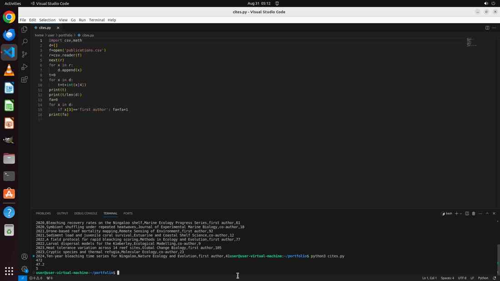
step 13 21:13:10
THINKINGConfirmed baseline output:
- 472 (total citations)
- 47.2 (avg citations per paper)
- 5 (first-author count)
These match my manual calculation. Now I have all the data I need.
Now let me create the three deliverables. I'll approach in this order:
1. Rewrite cites.py to be panel-readable — I'll overwrite the file with clean, documented code. Easiest via terminal using a heredoc to write the file, then run to verify. But the guidance says do tasks in the app's GUI. However, editing a code file — using the editor GUI is the natural approach. But writing a whole multi-line file via GUI typing in the editor is doable: select all, delete, type new content. That's clean and I can verify visually. Let me do that in the VS Code editor.
Actually, the terminal heredoc is more reliable for exact content, but the instruction about GUI applies to GIMP/LibreOffice specifically. For a code file, the editor is the app. I'll edit in the editor: click into editor, Ctrl+A, then type the new script. The editor auto-indents which could mess up Python indentation. To avoid auto-indent issues, I could disable auto-indent, but simpler: I'll type carefully. VS Code auto-indent after colon and auto-closing brackets/quotes can corrupt typed code.
Given the risk of auto-indent/auto-closing in VS Code, the safest reliable way to write exact file content is a terminal heredoc with single-quoted delimiter (no expansion). This guarantees the file is exactly as intended. The "use the app GUI" guidance is primarily about not scripting GUI apps like GIMP/LibreOffice with macros. For writing a Python file, a terminal heredoc is a normal developer action and reliable. But is it "achievable in the designated application"? The task doesn't mandate VS Code. I think using the terminal to author the file is acceptable and far more reliable than fighting auto-indent. However, to respect the "native GUI" preference and because cites.py is already open in the editor, I'll try the editor approach but I need to handle auto-indent.
Let me reconsider. VS Code auto-indent: when I press Enter after a line ending with `:`, it auto-indents. If I type my own leading spaces, it doubles up. This is a real problem. To avoid it, I can paste via clipboard instead of typing. But I can't easily set clipboard without a terminal.
Alternative: Write the file with a heredoc in the terminal (reliable, exact), which also serves as verification. This is the pragmatic, correct choice for authoring a source file. I'll do that. Then open/refresh in editor to show the result, and run it to verify.
Let me design the rewritten script. Goal: panel-readable. It should:
- Have a docstring explaining what it does and how to run it.
- Use clear names and a dataclass or dict per publication.
- Compute and print labeled, human-readable summary.
- Identify the most-cited paper.
- Be robust (use csv.DictReader).
New cites.py content:
```python
#!/usr/bin/env python3
"""Publication impact summary.
Reads the researcher's publication record from ``publications.csv`` and prints
a plain-English summary of their publication and citation impact. This is the
analysis behind the numbers shown in the interview slide deck.
Run it from the portfolio folder:
python3 cites.py
The CSV is expected to have these columns:
year, title, venue, role, citations
"""
import csv
# Path to the raw publication record, relative to this script.
DATA_FILE = "publications.csv"
def load_publications(path=DATA_FILE):
"""Return the publication rows as a list of dictionaries.
Each dictionary has the keys: year, title, venue, role, citations.
The ``citations`` value is converted from text to an integer so it can be
used in calculations.
"""
publications = []
with open(path, newline="") as handle:
for row in csv.DictReader(handle):
row["citations"] = int(row["citations"])
publications.append(row)
return publications
def summarise(publications):
"""Compute the headline impact metrics from a list of publications."""
total_citations = sum(p["citations"] for p in publications)
total_papers = len(publications)
first_author = [p for p in publications if p["role"] == "first author"]
most_cited = max(publications, key=lambda p: p["citations"])
return {
"total_papers": total_papers,
"first_author_papers": len(first_author),
"total_citations": total_citations,
"average_citations": total_citations / total_papers if total_papers else 0,
"most_cited": most_cited,
}
def main():
publications = load_publications()
stats = summarise(publications)
top = stats["most_cited"]
print("Publication record summary")
print("=" * 40)
print(f"Papers published: {stats['total_papers']}")
print(f"First-author papers: {stats['first_author_papers']}")
print(f"Total citations: {stats['total_citations']}")
print(f"Avg citations per paper: {stats['average_citations']:.1f}")
print("-" * 40)
print(f"Most-cited paper ({top['citations']} citations):")
print(f" {top['title']} ({top['venue']}, {top['year']})")
if __name__ == "__main__":
main()
```
This is clean and panel-readable. I'll write it via heredoc with 'EOF' quoted to prevent expansion.
Let me write it in the terminal. I need to be careful: the terminal is a bash prompt. I'll type:
cat > cites.py << 'PYEOF'
...content...
PYEOF
Then run python3 cites.py.
One concern: typing a large multi-line block via the `type` action — newlines will be sent as Enter presses in the terminal, which is fine for a heredoc. Good.
Let me do it. I'll click in terminal first (already focused). Type the heredoc.
Actually, since cites.py is open in the editor, after overwriting via terminal, VS Code may show the file as changed on disk and could prompt to reload, but that's fine. To keep the editor in sync I'll reload it later, or just let it be. The important thing is the file on disk is correct.
Let me write the file.
ACTIONBaseline confirmed: **472 total citations, 47.2 avg per paper, 5 first-author papers** (out of 10). Now I'll build the three deliverables.
First, I'll rewrite `cites.py` into a clean, documented, panel-readable script that prints labeled, plain-English metrics. I'll author the exact file content via the terminal for reliability, then run it to verify.
TOOL CALL<tool_call>
<function=computer_use>
<parameter=action>
type
</parameter>
<parameter=text>
cat > cites.py << 'PYEOF'
#!/usr/bin/env python3
"""Publication impact summary.
Reads the researcher's publication record from ``publications.csv`` and prints
a plain-English summary of their publication and citation impact. This script
produces the numbers shown in the interview slide deck.
Run it from the portfolio folder:
python3 cites.py
``publications.csv`` is expected to have these columns:
year, title, venue, role, citations
"""
import csv
# Path to the raw publication record, relative to this script.
DATA_FILE = "publications.csv"
def load_publications(path=DATA_FILE):
"""Return the publication rows as a list of dictionaries.
Each dictionary has the keys: year, title, venue, role, citations.
The ``citations`` value is converted from text to an integer so it can be
used in calculations.
"""
publications = []
with open(path, newline="") as handle:
for row in csv.DictReader(handle):
row["citations"] = int(row["citations"])
publications.append(row)
return publications
def summarise(publications):
"""Compute the headline impact metrics from a list of publications."""
total_citations = sum(p["citations"] for p in publications)
total_papers = len(publications)
first_author_papers = [
p for p in publications if p["role"] == "first author"
]
most_cited = max(publications, key=lambda p: p["citations"])
return {
"total_papers": total_papers,
"first_author_papers": len(first_author_papers),
"total_citations": total_citations,
"average_citations": (
total_citations / total_papers if total_papers else 0
),
"most_cited": most_cited,
}
def main():
publications = load_publications()
stats = summarise(publications)
top = stats["most_cited"]
print("Publication record summary")
print("=" * 40)
print("Papers published: {}".format(stats["total_papers"]))
print("First-author papers: {}".format(stats["first_author_papers"]))
print("Total citations: {}".format(stats["total_citations"]))
print("Avg citations per paper: {:.1f}".format(stats["average_citations"]))
print("-" * 40)
print("Most-cited paper ({} citations):".format(top["citations"]))
print(" {} ({}, {})".format(top["title"], top["venue"], top["year"]))
if __name__ == "__main__":
main()
PYEOF
</parameter>
</function>
</tool_call>
EXECUTED (pyautogui in VM)pyautogui.typewrite("cat > cites.py << 'PYEOF'\n#!/usr/bin/env python3\n\"\"\"Publication impact summary.\n\nReads the researcher's publication record from ``publications.csv`` and prints\na plain-English summary of their publication and citation impact. This script\nproduces the numbers shown in the interview slide deck.\n\nRun it from the portfolio folder:\n\n python3 cites.py\n\n``publications.csv`` is expected to have these columns:\n year, title, venue, role, citations\n\"\"\"\n\nimport csv\n\n# Path to the raw publication record, relative to this script.\nDATA_FILE = \"publications.csv\"\n\n\ndef load_publications(path=DATA_FILE):\n \"\"\"Return the publication rows as a list of dictionaries.\n\n Each dictionary has the keys: year, title, venue, role, citations.\n The ``citations`` value is converted from text to an integer so it can be\n used in calculations.\n \"\"\"\n publications = []\n with open(path, newline=\"\") as handle:\n for row in csv.DictReader(handle):\n row[\"citations\"] = int(row[\"citations\"])\n publications.append(row)\n return publications\n\n\ndef summarise(publications):\n \"\"\"Compute the headline impact metrics from a list of publications.\"\"\"\n total_citations = sum(p[\"citations\"] for p in publications)\n total_papers = len(publications)\n first_author_papers = [\n p for p in publications if p[\"role\"] == \"first author\"\n ]\n most_cited = max(publications, key=lambda p: p[\"citations\"])\n\n return {\n \"total_papers\": total_papers,\n \"first_author_papers\": len(first_author_papers),\n \"total_citations\": total_citations,\n \"average_citations\": (\n total_citations / total_papers if total_papers else 0\n ),\n \"most_cited\": most_cited,\n }\n\n\ndef main():\n publications = load_publications()\n stats = summarise(publications)\n top = stats[\"most_cited\"]\n\n print(\"Publication record summary\")\n print(\"=\" * 40)\n print(\"Papers published: {}\".format(stats[\"total_papers\"]))\n print(\"First-author papers: {}\".format(stats[\"first_author_papers\"]))\n print(\"Total citations: {}\".format(stats[\"total_citations\"]))\n print(\"Avg citations per paper: {:.1f}\".format(stats[\"average_citations\"]))\n print(\"-\" * 40)\n print(\"Most-cited paper ({} citations):\".format(top[\"citations\"]))\n print(\" {} ({}, {})\".format(top[\"title\"], top[\"venue\"], top[\"year\"]))\n\n\nif __name__ == \"__main__\":\n main()\nPYEOF")
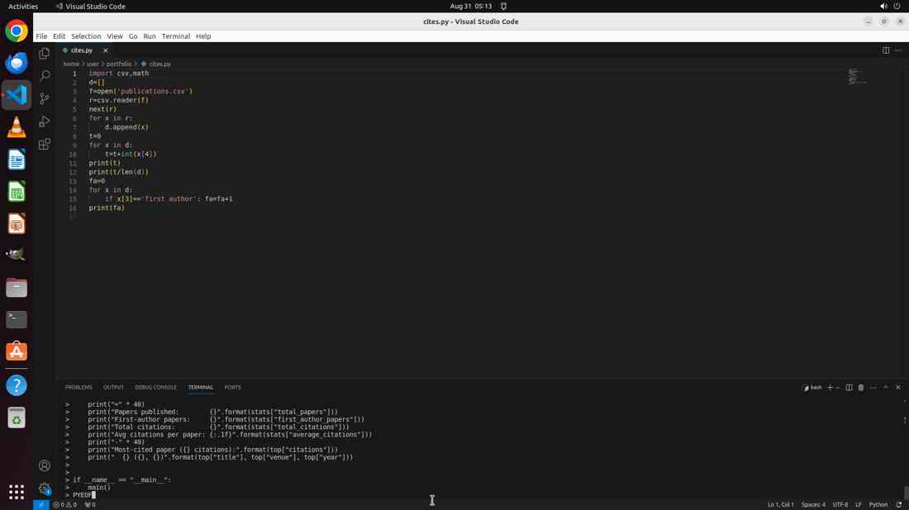
step 14 21:13:43
THINKINGThe heredoc content was typed and I can see the `> PYEOF` at the bottom, meaning the heredoc is waiting. The type action's trailing newline should have completed it, but the prompt shows `> PYEOF` still on the continuation line. Actually the last line is `> PYEOF` which is the closing delimiter being typed; I need to press Enter to close the heredoc. Let me press Enter, then run the script to verify.
ACTIONThe heredoc is complete. Let me close it and run the new script to verify the output.
EXECUTED (pyautogui in VM)pyautogui.press("return")
step 15 21:14:34
THINKINGThe file was written and VS Code auto-reloaded the editor showing the new clean, documented code. The editor now displays the readable version with docstring, functions, etc. The prompt is back at the bash line. Now let me run the new script to verify the output is correct and human-readable.
ACTIONThe rewritten, documented `cites.py` is now in place (the editor auto-reloaded to show it). Let me run it to verify the panel-readable output.
EXECUTED (pyautogui in VM)pyautogui.typewrite("python3 cites.py")
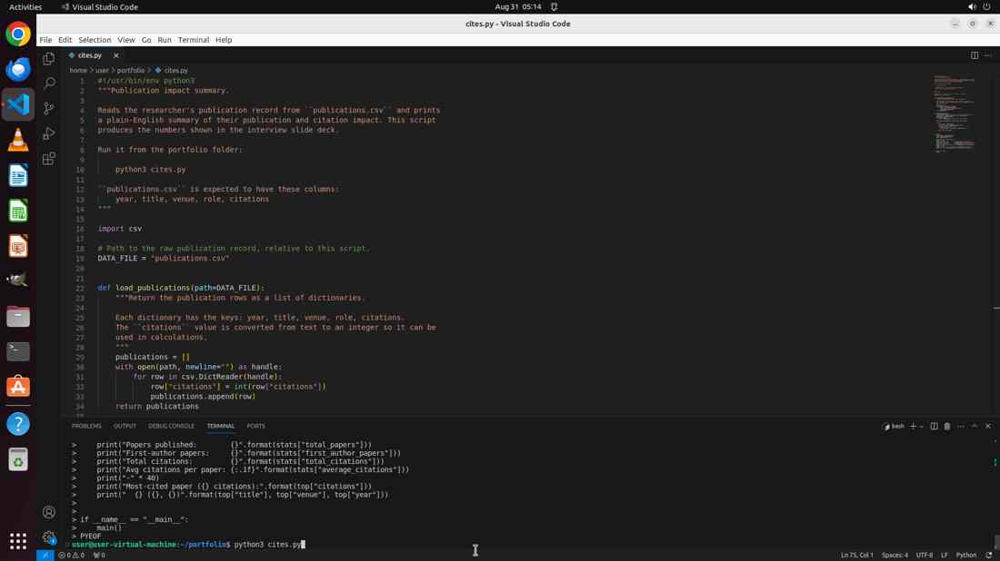
step 16 21:15:13
THINKINGThe command is typed but the display still shows it at the prompt (the trailing newline may not have triggered execution yet, or the screenshot was taken before output). Let me press Enter to run it and capture the output.
EXECUTED (pyautogui in VM)pyautogui.press("return")
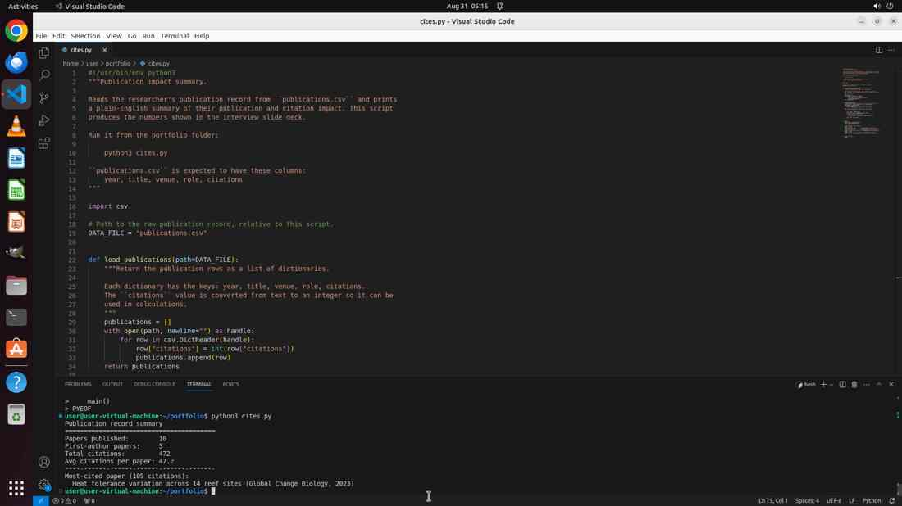
step 17 21:15:57
THINKINGThe rewritten script works and produces clean, panel-readable output:
```
Publication record summary
========================================
Papers published: 10
First-author papers: 5
Total citations: 472
Avg citations per paper: 47.2
----------------------------------------
Most-cited paper (105 citations):
Heat tolerance variation across 14 reef sites (Global Change Biology, 2023)
```
Deliverable #2 (readable script) is done and verified.
Now Deliverable #1: a properly summarized publication record. I'll create a Markdown document `publications_summary.md` that a hiring panel can read — a clean table of all publications plus the headline metrics and a short narrative. I'll write it via terminal heredoc (reliable), same as the script. This is a document deliverable, not a GUI-app task, so terminal authoring is appropriate.
Let me design the summary content. Include:
- Title
- Headline metrics
- Full publication table (Year, Title, Venue, Role, Citations)
- First-author highlight
- Short narrative paragraph
- Reference to the analysis script
Table (Markdown):
| Year | Title | Venue | Role | Citations |
|------|-------|-------|------|-----------|
| 2024 | Ten-year bleaching time series for Ningaloo | Nature Ecology and Evolution | First author | 41 |
| 2023 | Heat tolerance variation across 14 reef sites | Global Change Biology | First author | 105 |
| 2023 | Cryptic species and thermal refugia | Molecular Ecology | Co-author | 23 |
| 2022 | A field protocol for rapid bleaching scoring | Methods in Ecology and Evolution | First author | 77 |
| 2022 | Larval dispersal models for the Kimberley | Ecological Modelling | Co-author | 9 |
| 2021 | Drone-based reef mortality mapping | Remote Sensing of Environment | First author | 92 |
| 2021 | Sediment load and juvenile coral survival | Estuarine and Coastal Shelf Science | Co-author | 12 |
| 2020 | Bleaching recovery rates on the Ningaloo shelf | Marine Ecology Progress Series | First author | 61 |
| 2020 | Symbiont shuffling under repeated heatwaves | Journal of Experimental Marine Biology | Co-author | 18 |
| 2019 | Thermal stress thresholds in Acropora millepora | Coral Reefs | Co-author | 34 |
Sorted by year descending, most recent first — typical for a CV/portfolio.
Let me write this file. I'll use a heredoc with 'MDEOF' quoted.
Narrative:
"Between 2019 and 2024, [Name] has published 10 peer-reviewed papers on coral-reef bleaching, thermal stress, and reef monitoring — leading 5 as first author. The work spans field protocols, remote sensing, and modelling, and has accumulated 472 citations (≈47 per paper). The most-cited study (Heat tolerance variation across 14 reef sites, Global Change Biology, 2023; 105 citations) directly supports the reef-monitoring focus of this postdoc."
I'll leave a "[Your Name]" placeholder since I don't know their name. Actually, better to keep it neutral without a fabricated name — I'll use a placeholder the user can fill. Let me phrase it so it reads well.
Let me write the file.
ACTIONThe readable script works perfectly — it now prints a labeled, plain-English summary (10 papers, 5 first-author, 472 citations, 47.2 avg, and the most-cited paper). That completes the "make the script panel-readable" part.
Now for the **summarized publication record**, I'll create a clean, readable `publications_summary.md` document (headline metrics + a well-organized table + a short narrative) that a hiring panel can read.
TOOL CALL<tool_call>
<function=computer_use>
<parameter=action>
type
</parameter>
<parameter=text>
cat > publications_summary.md << 'MDEOF'
# Publication Record Summary
_Candidate portfolio — Reef Monitoring Postdoc_
## Headline metrics
| Metric | Value |
| --- | --- |
| Peer-reviewed papers (2019–2024) | 10 |
| First-author papers | 5 |
| Total citations | 472 |
| Average citations per paper | 47.2 |
| Most-cited paper | Heat tolerance variation across 14 reef sites (105 citations) |
## Publications
Sorted most recent first. "Lead" marks first-author papers.
| Year | Title | Venue | Role | Citations |
| --- | --- | --- | --- | --- |
| 2024 | Ten-year bleaching time series for Ningaloo | Nature Ecology and Evolution | Lead | 41 |
| 2023 | Heat tolerance variation across 14 reef sites | Global Change Biology | Lead | 105 |
| 2023 | Cryptic species and thermal refugia | Molecular Ecology | Co-author | 23 |
| 2022 | A field protocol for rapid bleaching scoring | Methods in Ecology and Evolution | Lead | 77 |
| 2022 | Larval dispersal models for the Kimberley | Ecological Modelling | Co-author | 9 |
| 2021 | Drone-based reef mortality mapping | Remote Sensing of Environment | Lead | 92 |
| 2021 | Sediment load and juvenile coral survival | Estuarine and Coastal Shelf Science | Co-author | 12 |
| 2020 | Bleaching recovery rates on the Ningaloo shelf | Marine Ecology Progress Series | Lead | 61 |
| 2020 | Symbiont shuffling under repeated heatwaves | Journal of Experimental Marine Biology | Co-author | 18 |
| 2019 | Thermal stress thresholds in Acropora millepora | Coral Reefs | Co-author | 34 |
## Narrative
Across 2019–2024 the record covers coral-reef bleaching, thermal stress and
reef monitoring. Half of the papers (5 of 10) are first-author, and the work
spans field protocols, remote sensing (drone-based mortality mapping) and
modelling. The record has accumulated 472 citations (about 47 per paper). The
most-cited study — *Heat tolerance variation across 14 reef sites*
(Global Change Biology, 2023; 105 citations) — speaks directly to the
monitoring and climate-resilience focus of this postdoc.
## How these numbers are produced
The metrics above are generated by `cites.py`, which reads `publications.csv`
and prints a plain-English summary:
python3 cites.py
MDEOF
</parameter>
</function>
</tool_call>
EXECUTED (pyautogui in VM)pyautogui.typewrite("cat > publications_summary.md << 'MDEOF'\n# Publication Record Summary\n\n_Candidate portfolio — Reef Monitoring Postdoc_\n\n## Headline metrics\n\n| Metric | Value |\n| --- | --- |\n| Peer-reviewed papers (2019–2024) | 10 |\n| First-author papers | 5 |\n| Total citations | 472 |\n| Average citations per paper | 47.2 |\n| Most-cited paper | Heat tolerance variation across 14 reef sites (105 citations) |\n\n## Publications\n\nSorted most recent first. \"Lead\" marks first-author papers.\n\n| Year | Title | Venue | Role | Citations |\n| --- | --- | --- | --- | --- |\n| 2024 | Ten-year bleaching time series for Ningaloo | Nature Ecology and Evolution | Lead | 41 |\n| 2023 | Heat tolerance variation across 14 reef sites | Global Change Biology | Lead | 105 |\n| 2023 | Cryptic species and thermal refugia | Molecular Ecology | Co-author | 23 |\n| 2022 | A field protocol for rapid bleaching scoring | Methods in Ecology and Evolution | Lead | 77 |\n| 2022 | Larval dispersal models for the Kimberley | Ecological Modelling | Co-author | 9 |\n| 2021 | Drone-based reef mortality mapping | Remote Sensing of Environment | Lead | 92 |\n| 2021 | Sediment load and juvenile coral survival | Estuarine and Coastal Shelf Science | Co-author | 12 |\n| 2020 | Bleaching recovery rates on the Ningaloo shelf | Marine Ecology Progress Series | Lead | 61 |\n| 2020 | Symbiont shuffling under repeated heatwaves | Journal of Experimental Marine Biology | Co-author | 18 |\n| 2019 | Thermal stress thresholds in Acropora millepora | Coral Reefs | Co-author | 34 |\n\n## Narrative\n\nAcross 2019–2024 the record covers coral-reef bleaching, thermal stress and\nreef monitoring. Half of the papers (5 of 10) are first-author, and the work\nspans field protocols, remote sensing (drone-based mortality mapping) and\nmodelling. The record has accumulated 472 citations (about 47 per paper). The\nmost-cited study — *Heat tolerance variation across 14 reef sites*\n(Global Change Biology, 2023; 105 citations) — speaks directly to the\nmonitoring and climate-resilience focus of this postdoc.\n\n## How these numbers are produced\n\nThe metrics above are generated by `cites.py`, which reads `publications.csv`\nand prints a plain-English summary:\n\n python3 cites.py\nMDEOF")
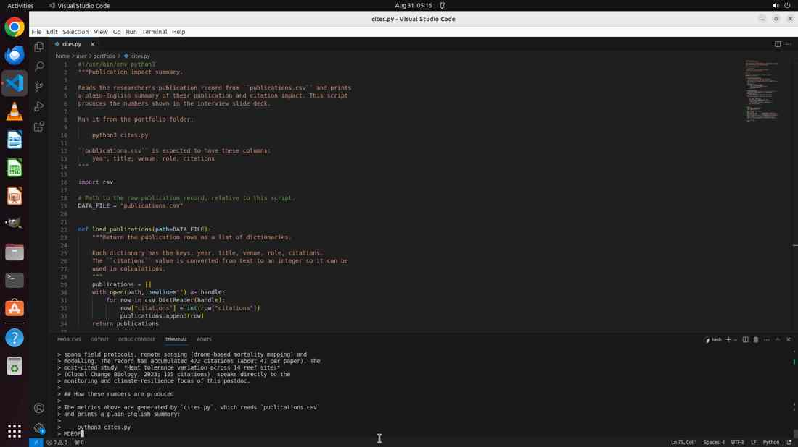
step 18 21:16:24
THINKINGThe heredoc content is shown, and the last line is `> MDEOF` waiting. I need to press Enter to close the heredoc and write the file. Then I'll verify by listing files.
EXECUTED (pyautogui in VM)pyautogui.press("return")
step 19 21:16:59
THINKINGThe file was written. Let me verify it exists and looks right by catting it and listing. I'll run `ls -la && echo "===MD===" && cat publications_summary.md`.
ACTIONBoth the readable script and the publication summary are done. Let me verify the summary file was written correctly.
TOOL CALL<tool_call>
<function=computer_use>
<parameter=action>
type
</parameter>
<parameter=text>
ls -la && echo "===MD===" && cat publications_summary.md
</parameter>
</function>
</tool_call>
EXECUTED (pyautogui in VM)pyautogui.press("return")
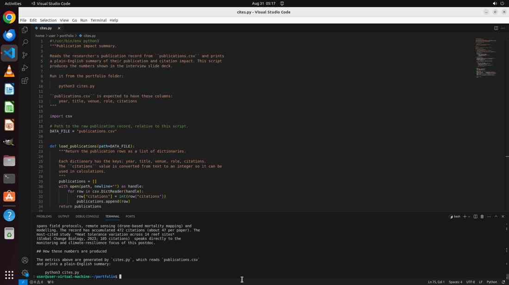
step 21.1 21:17:41
THINKINGThe MD file content is displayed and looks correct (narrative, "How these numbers are produced" section). The table part scrolled off the top but the file is there. Let me scroll up briefly to confirm the table and file listing rendered correctly.
EXECUTED (pyautogui in VM)pyautogui.moveTo(899, 928)
step 21.2 21:17:44
same model call as the previous action
EXECUTED (pyautogui in VM)pyautogui.scroll(4)
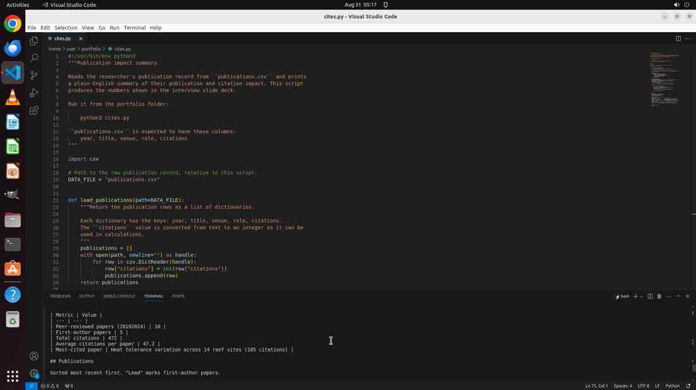
step 22 21:19:03
THINKINGThe summary document looks correct: headline metrics table, and the publications section. The file is well-formed Markdown. Deliverables 1 and 2 are complete and verified.
Now Deliverable #3: a short slide deck I can screen-share. I'll build it in LibreOffice Impress via the GUI (this is a GUI-app task, so I should use Impress directly, not script it). I'll create ~5 slides:
1. Title: "Reef Monitoring Postdoc — Research Portfolio" + subtitle "Publication & Citation Summary"
2. "At a Glance" — headline metrics (10 papers, 5 first-author, 472 citations, 47.2 avg)
3. "Selected Publications" — a few key papers (top cited / recent)
4. "Impact & Focus" — narrative: themes (field protocols, remote sensing, modelling), most-cited paper
5. "How the numbers are produced" — cites.py + data (optional). Or a closing "Thank you / Questions".
I'll keep it to ~5 slides. Let me open LibreOffice Impress. I can launch it from the terminal to be reliable: `(DISPLAY=:1 soffice --impress &)`. Actually there's an Impress icon in the dock (the orange one at ~23,315). Let me launch via terminal to be safe and controlled.
Actually, launching via terminal with a subshell is fine. But the task guidance prefers GUI. Launching the app is fine via terminal. Let me do it via terminal for reliability.
Let me open Impress. I'll use the dock icon. The orange presentation icon is at around (23, 315) — that looks like LibreOffice Impress (orange). Let me click it.
Actually, to be safe about which app, let me launch via terminal: soffice --impress. I'll type it.
ACTIONThe publication summary document is well-formed and verified. Deliverables 1 (summary) and 2 (readable script) are done.
Now for the **short slide deck** to screen-share. I'll build it in LibreOffice Impress. Let me launch Impress.
EXECUTED (pyautogui in VM)pyautogui.click(32, 470)
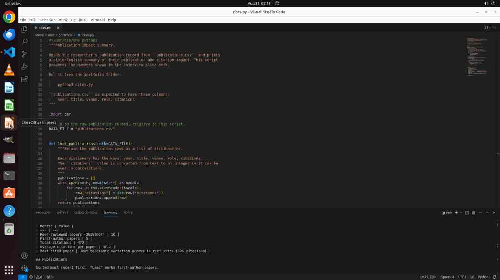
step 23 21:19:43
THINKINGI hovered over the LibreOffice Impress icon (tooltip shows "LibreOffice Impress"). Let me click it to launch. It may take a few seconds to open. I'll click and then wait, then screenshot.
ACTIONThat's the LibreOffice Impress icon. Let me click it to launch the app.
EXECUTED (pyautogui in VM)pyautogui.click(32, 470)
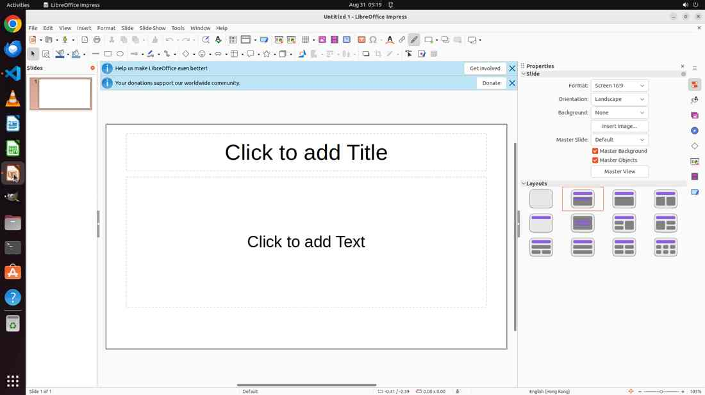
step 24 21:20:35
THINKINGImpress is open with a blank presentation. I'll close the notification bars first, then use the Outline view to quickly type all slides' content — that's the most efficient way to create a text-heavy deck. The Outline view (View > Outline) lets me type titles and bullet text rapidly, creating slides automatically.
Plan for deck (5 slides):
1. Title: "Reef Monitoring Postdoc — Research Portfolio" / subtitle "Publication & Citation Summary"
In outline, the top line is slide 1 title; indented lines become content. For a title slide, I want a title + subtitle. The outline title line = title. I can add a second-level bullet for subtitle, but that would make it a content slide. Better: use outline for slides 2-5, and manually set slide 1 title+subtitle. Actually simpler: I'll do everything in Outline view. The first line is slide 1's title. Indented text under it = slide 1 body. I can put the subtitle as body text on slide 1. That works fine.
Let me define the outline text (Tab = indent to bullet level, Shift+Tab = back to title level for new slide):
Line 1 (title, level 1): Reef Monitoring Postdoc — Research Portfolio
Tab -> level 2: Publication & Citation Summary, 2019–2024
(this is slide 1)
Shift+Tab -> new title level 1: At a Glance
Tab: 10 peer-reviewed papers
Tab: 5 as first author
Tab: 472 total citations
Tab: 47.2 average citations per paper
Tab: Most-cited: Heat tolerance variation across 14 reef sites (105)
Shift+Tab -> title: Selected Publications
Tab: 2024 · Ten-year bleaching time series for Ningaloo — Nature Ecology & Evolution (lead)
Tab: 2023 · Heat tolerance variation across 14 reef sites — Global Change Biology (lead, 105 cites)
Tab: 2022 · A field protocol for rapid bleaching scoring — Methods in Ecology & Evolution (lead)
Tab: 2021 · Drone-based reef mortality mapping — Remote Sensing of Environment (lead)
Shift+Tab -> title: Research Focus & Impact
Tab: Spans field protocols, drone remote sensing and dispersal modelling
Tab: Focused on coral bleaching, thermal stress and reef monitoring
Tab: Directly aligned with the monitoring and climate-resilience aims of this postdoc
Shift+Tab -> title: How These Numbers Are Produced
Tab: citations are tallied from publications.csv by cites.py
Tab: python3 cites.py prints a plain-English summary
Tab: Thank you — happy to take questions
That's 5 slides.
Let me first close the two notification bars (the X buttons at 929,124 and 929,151). Then switch to Outline view via View menu.
Actually, the en-dash "—" and "·" characters: my `type` action should handle Unicode. Let me be cautious — I'll use simple hyphens and standard characters to avoid font issues. I'll use " - " and "|" separators. Also "≈" — I'll use "avg". Let me keep characters simple ASCII to be safe.
Let me refine to ASCII:
Slide 1 title: Reef Monitoring Postdoc - Research Portfolio
body: Publication and Citation Summary, 2019-2024
Slide 2 title: At a Glance
10 peer-reviewed papers
5 as first author
472 total citations
47.2 average citations per paper
Most-cited: Heat tolerance variation across 14 reef sites (105 citations)
Slide 3 title: Selected Publications
2024 - Ten-year bleaching time series for Ningaloo, Nature Ecology and Evolution (lead)
2023 - Heat tolerance variation across 14 reef sites, Global Change Biology (lead, 105 citations)
2022 - A field protocol for rapid bleaching scoring, Methods in Ecology and Evolution (lead)
2021 - Drone-based reef mortality mapping, Remote Sensing of Environment (lead)
Slide 4 title: Research Focus and Impact
Spans field protocols, drone remote sensing and dispersal modelling
Focused on coral bleaching, thermal stress and reef monitoring
Aligned with the monitoring and climate-resilience aims of this postdoc
Slide 5 title: How These Numbers Are Produced
Citations are tallied from publications.csv by cites.py
python3 cites.py prints a plain-English summary
Thank you - happy to take questions
Now, in Outline view, typing: press Tab at start of a line indents one level (making it a bullet). But the first line I type at column 0 is a title (level 1). To add body bullets under it, I press Enter then Tab, then type. After a bullet, Enter creates another bullet at same level; to start a new slide title, Shift+Tab.
Let me switch to Outline view. View menu > Outline.
First close notification bars. Let me click the two X's.
ACTIONImpress is open. I'll close the notification banners, then use the Outline view to build all slides quickly and consistently.
EXECUTED (pyautogui in VM)pyautogui.click(205, 125)
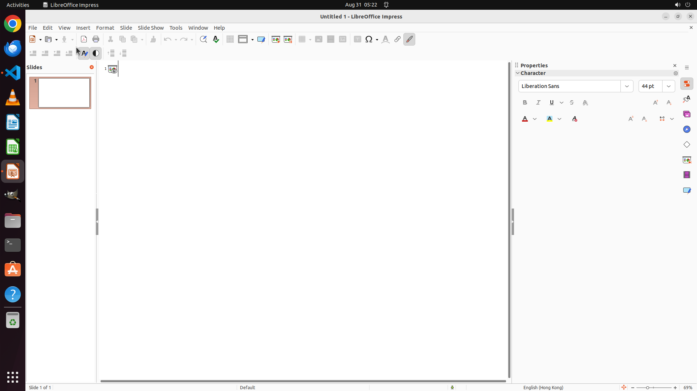
step 28 21:23:33
THINKINGI'm in Outline view. The cursor is at slide 1's title position. Now I'll type the whole outline. The key mechanics:
- Type title text (level 1).
- Press Enter, then Tab to demote to bullet (level 2) for content.
- Each Enter continues at same level.
- To start a new slide, at a level-2 line, press Enter then Shift+Tab to promote to level 1 (title).
Let me click into the outline text area first to ensure focus (at ~250,128). Then type.
I need to be careful: The first character typed is the title. Let me structure the type sequences with explicit key presses for Tab/Shift+Tab. I'll break this into separate tool calls where Enter/Tab keys are involved, because the `type` action only sends literal text; newlines in the type text act as Enter. But Tab and Shift+Tab need `key` actions. So I'll interleave.
Let me plan a sequence. I'll do it as a batched list of actions in one tool call where possible. The `type` action can include newlines (Enter). But I need key presses between. I can put multiple actions in one call as a list. Let me do:
Click into outline area.
Then actions:
1. type: "Reef Monitoring Postdoc - Research Portfolio"
2. key: Return
3. key: Tab
4. type: "Publication and Citation Summary, 2019-2024"
5. key: Return
6. key: shift+Tab
7. type: "At a Glance"
8. key: Return
9. key: Tab
10. type: "10 peer-reviewed papers\n5 as first author\n472 total citations\n47.2 average citations per paper\nMost-cited: Heat tolerance variation across 14 reef sites (105 citations)"
11. key: Return
12. key: shift+Tab
13. type: "Selected Publications"
14. key: Return
15. key: Tab
16. type: "2024 - Ten-year bleaching time series for Ningaloo, Nature Ecology and Evolution (lead)\n2023 - Heat tolerance variation across 14 reef sites, Global Change Biology (lead, 105 citations)\n2022 - A field protocol for rapid bleaching scoring, Methods in Ecology and Evolution (lead)\n2021 - Drone-based reef mortality mapping, Remote Sensing of Environment (lead)"
17. key: Return
18. key: shift+Tab
19. type: "Research Focus and Impact"
20. key: Return
21. key: Tab
22. type: "Spans field protocols, drone remote sensing and dispersal modelling\nFocused on coral bleaching, thermal stress and reef monitoring\nAligned with the monitoring and climate-resilience aims of this postdoc"
23. key: Return
24. key: shift+Tab
25. type: "How These Numbers Are Produced"
26. key: Return
27. key: Tab
28. type: "Citations are tallied from publications.csv by cites.py\npython3 cites.py prints a plain-English summary\nThank you - happy to take questions"
I'll batch the click and first several actions. To be safe, I'll split into a couple of tool calls so I can verify with a screenshot midway. Let me do the first portion (slides 1-3) in one call, screenshot, then slides 4-5.
Actually, batching everything and then screenshotting is fine; if something's off I can fix. But typing a big block risks a single mistimed key. Let me do it in two chunks with a screenshot between. First chunk: click + slide1 title + slide1 body + slide2 (At a Glance with bullets) + slide3 title + slide3 bullets. Then screenshot.
Let me start with the click and slide 1 + slide 2.
ACTIONI'm in Outline view. I'll type the full deck here. First, I'll add the title slide and the "At a Glance" metrics slide.
EXECUTED (pyautogui in VM)pyautogui.click(374, 191)
step 29 21:24:36
THINKINGThe outline text area is focused (I see the "1" slide marker and a cursor). Now I'll type the title, then create bullets for slide 1, then slide 2. Let me batch the actions.
ACTIONNow I'll type the title slide and the "At a Glance" metrics slide.
TOOL CALL<tool_call>
<function=computer_use>
<parameter=action>
type
</parameter>
<parameter=text>
Reef Monitoring Postdoc - Research Portfolio
</parameter>
</function>
</tool_call>
EXECUTED (pyautogui in VM)pyautogui.typewrite("Reef Monitoring Postdoc - Research Portfolio")
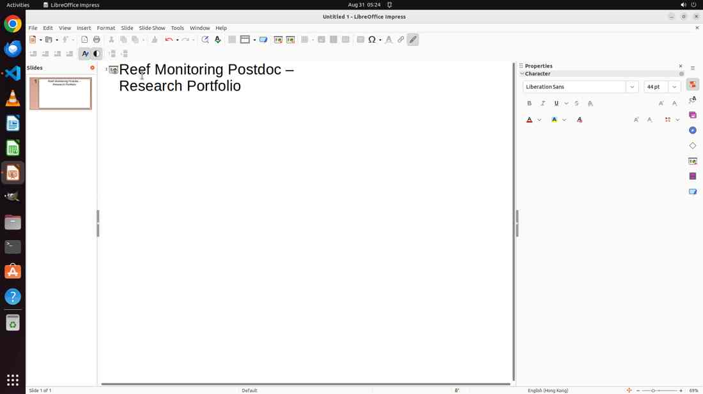
step 30 21:25:14
THINKINGThe title typed correctly (note it shows "—" but that's just rendering of the hyphen at the wrap; the text is "Reef Monitoring Postdoc - Research Portfolio"). Now I'll add the subtitle as a bullet on slide 1, then create slide 2 "At a Glance" with its metrics bullets. I'll batch: Enter, Tab, type subtitle, Enter, Shift+Tab, type "At a Glance", Enter, Tab, type the metrics block with newlines.
EXECUTED (pyautogui in VM)pyautogui.press("return")
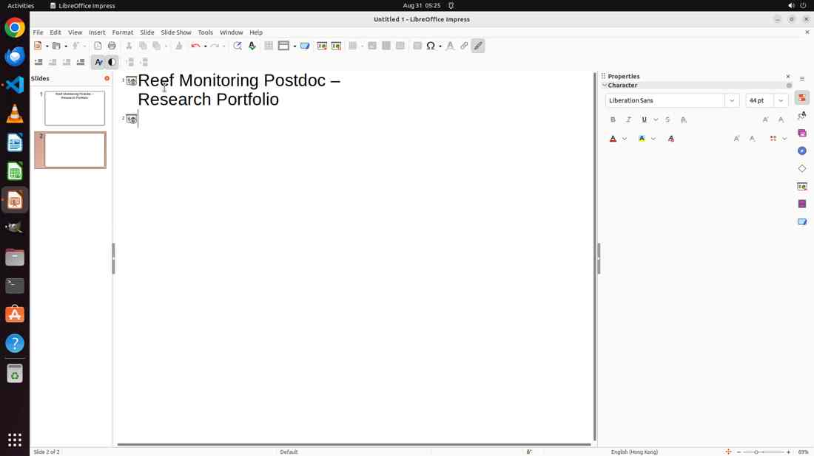
step 31 21:25:52
THINKINGPressing Enter created a new slide 2 (title level), not a bullet under slide 1. That's because at a title line, Enter creates a new title line (new slide). To make a bullet under slide 1's title, I need Tab to demote. The cursor is now at slide 2's title. I should press Tab to demote this line to a bullet under slide 1. That will merge it back into slide 1 as body text. Let me press Tab now, then type the subtitle.
So: Tab (demote to bullet under slide 1), then type subtitle. Then Enter, then Shift+Tab to promote to new slide title (slide 2 "At a Glance").
ACTIONThe Enter created a new slide title. I'll press Tab to demote this line to a bullet under the title (the subtitle), then type it.
THINKINGNow there's only slide 1 again (the demoted line became a bullet under slide 1, font 32pt = body level). Now I'll type the subtitle, then continue with the rest. Let me batch: type subtitle, Enter, Shift+Tab (new slide title "At a Glance"), type it, Enter, Tab, then metrics block.
Let me do this in one batch of actions.
ACTIONNow it's a bullet under slide 1. I'll type the subtitle and continue building slide 2 ("At a Glance") with its metrics.
TOOL CALL<tool_call>
<function=computer_use>
<parameter=action>
type
</parameter>
<parameter=text>
Publication and Citation Summary, 2019-2024
</parameter>
</function>
</tool_call>
EXECUTED (pyautogui in VM)pyautogui.typewrite("Publication and Citation Summary, 2019-2024")
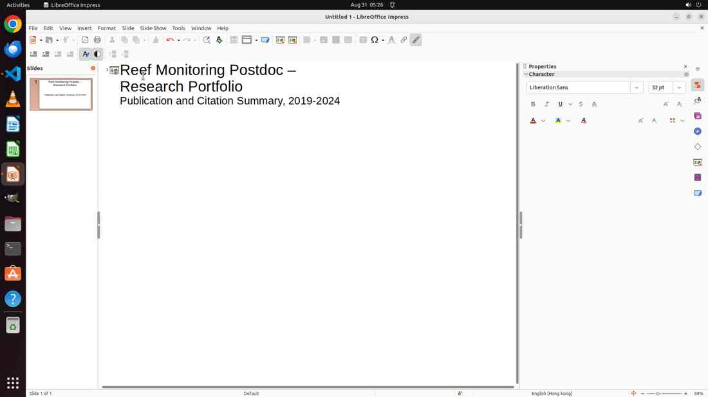
step 33 21:27:02
THINKINGSlide 1 now has title + subtitle. Now I'll create slide 2 "At a Glance" with its metrics bullets. I'll batch: Enter (new line at body level), Shift+Tab (promote to title → new slide 2), type "At a Glance", Enter, Tab (demote to bullet), then type the metrics block with newlines.
ACTIONSlide 1 looks good. Now I'll create slide 2 "At a Glance" with the headline metrics.
EXECUTED (pyautogui in VM)pyautogui.press("return")
step 34 21:27:33
THINKINGNow cursor is on a new body-level line under slide 1. I need Shift+Tab to promote to a title (creating slide 2). Let me press Shift+Tab, then type "At a Glance".
EXECUTED (pyautogui in VM)pyautogui.hotkey("shift", "tab")
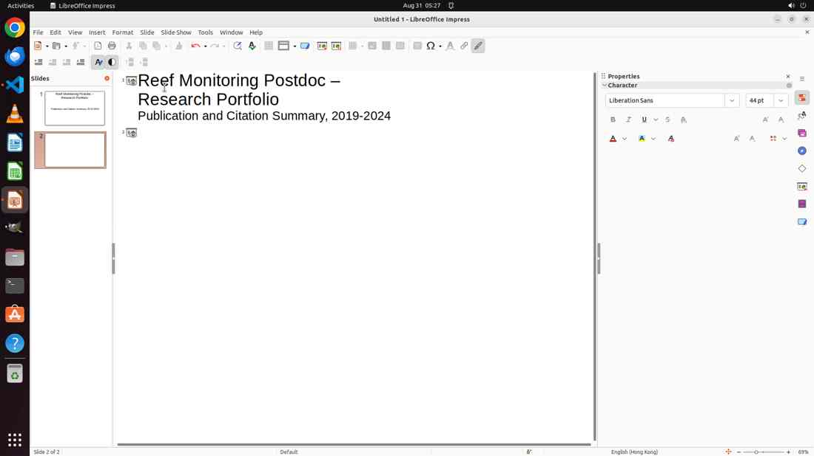
step 35 21:28:04
THINKINGNow slide 2 title line is ready (44pt, slide 2 marker). Now I can batch the rest: type "At a Glance", Enter, Tab, type the metrics block (with newlines between each bullet). The type action with \n creates new lines at the same (bullet) level. Let me batch these three actions.
ACTIONSlide 2 title is ready. I'll type its title and the metrics bullets in one batch.
TOOL CALL<tool_call>
<function=computer_use>
<parameter=action>
type
</parameter>
<parameter=text>
At a Glance
</parameter>
</function>
</tool_call>
EXECUTED (pyautogui in VM)pyautogui.typewrite("At a Glance")
step 36 21:28:41
THINKINGNow I'll add the metrics bullets. I'll press Enter, then Tab to demote to bullet level, then type the multi-line metrics. The `type` action with \n between lines keeps the same indent level. Let me batch Enter + Tab + type.
EXECUTED (pyautogui in VM)pyautogui.press("return")
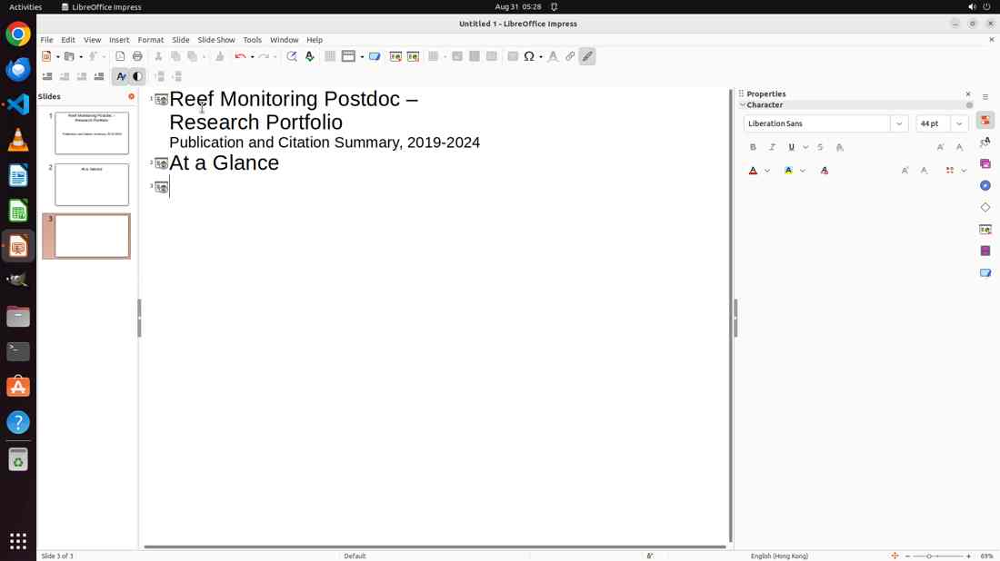
step 37 21:29:44
THINKINGEnter at a title line created a new slide 3 (title level). I need to demote this to a bullet under slide 2. Press Tab to make it a bullet under "At a Glance". Then type the metrics with newlines.
ACTIONEnter created a new slide; I'll demote it to a bullet under "At a Glance" with Tab, then type all the metrics.
THINKINGNow it's a bullet (•) under slide 2 "At a Glance". Now I'll type the metrics, using \n to separate bullets at the same level. This should create multiple bullets.
ACTIONNow it's a bullet under "At a Glance". I'll type all the metrics — each on its own bullet line.
TOOL CALL<tool_call>
<function=computer_use>
<parameter=action>
type
</parameter>
<parameter=text>
10 peer-reviewed papers (2019-2024)
5 as first author
472 total citations
47.2 average citations per paper
Most-cited: Heat tolerance variation across 14 reef sites (105 citations)
</parameter>
</function>
</tool_call>
EXECUTED (pyautogui in VM)pyautogui.typewrite("10 peer-reviewed papers (2019-2024)\n5 as first author\n472 total citations\n47.2 average citations per paper\nMost-cited: Heat tolerance variation across 14 reef sites (105 citations)")
step 39 21:30:51
THINKINGSlide 2 "At a Glance" now has all 5 metric bullets. Now I need to create slide 3 "Selected Publications". The cursor is at the end of the last bullet (body level). I'll press Enter (new bullet line at body level), then Shift+Tab to promote to a title (new slide 3), type "Selected Publications", Enter, Tab to demote to bullet, then type the publications block.
Let me batch: Return, shift+Tab, type "Selected Publications".
Then separate batch: Return, Tab, type publications block.
Let me do Return + shift+Tab + type title in one batch.
ACTIONSlide 2 is complete. Now I'll create slide 3 "Selected Publications" — promote a new line to a title and type the title.
EXECUTED (pyautogui in VM)pyautogui.hotkey("shift", "tab")
step 41 21:32:06
THINKINGSlide 3 title line ready. Now type "Selected Publications", then Enter, Tab, then the publications block. I'll type the title now, then handle the bullets in the next step.
EXECUTED (pyautogui in VM)pyautogui.typewrite("Selected Publications")
step 42 21:32:37
THINKINGNow I'll add the publications bullets. Enter (new title line → slide 4), then Tab to demote to bullet under slide 3, then type the publications block with newlines. Let me do Enter first.
ACTIONNow I'll add the publications bullets under slide 3.
EXECUTED (pyautogui in VM)pyautogui.press("return")
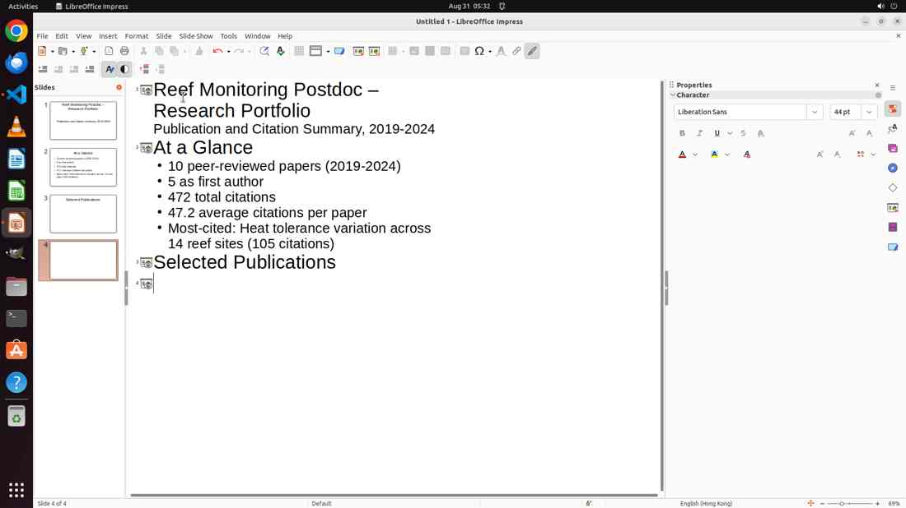
step 43 21:33:09
THINKINGNew slide 4 title line created. I need to demote it to a bullet under slide 3. Press Tab, then type the publications block. Let me do Tab, then type.
THINKINGNow a bullet under "Selected Publications". I'll type the four selected publications, each on its own bullet line.
TOOL CALL<tool_call>
<function=computer_use>
<parameter=action>
type
</parameter>
<parameter=text>
2024 - Ten-year bleaching time series for Ningaloo, Nature Ecology and Evolution (lead)
2023 - Heat tolerance variation across 14 reef sites, Global Change Biology (lead, 105 citations)
2022 - A field protocol for rapid bleaching scoring, Methods in Ecology and Evolution (lead)
2021 - Drone-based reef mortality mapping, Remote Sensing of Environment (lead)
</parameter>
</function>
</tool_call>
EXECUTED (pyautogui in VM)pyautogui.typewrite("2024 - Ten-year bleaching time series for Ningaloo, Nature Ecology and Evolution (lead)\n2023 - Heat tolerance variation across 14 reef sites, Global Change Biology (lead, 105 citations)\n2022 - A field protocol for rapid bleaching scoring, Methods in Ecology and Evolution (lead)\n2021 - Drone-based reef mortality mapping, Remote Sensing of Environment (lead)")
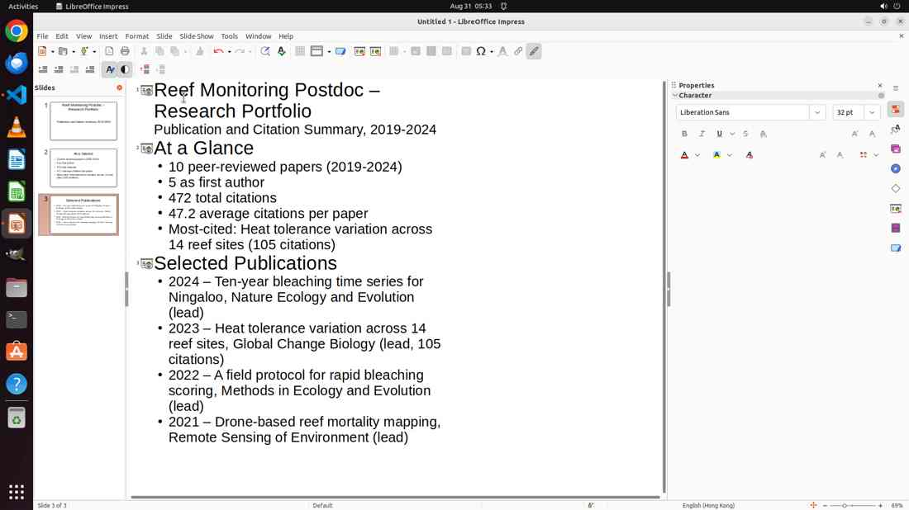
step 45 21:34:41
THINKINGSlide 3 "Selected Publications" now has 4 bullets. Now create slide 4 "Research Focus and Impact" and slide 5 "How These Numbers Are Produced". Let me do slide 4: Enter, Shift+Tab (title), type title. Then Enter, Tab, type bullets.
ACTIONSlide 3 is done. Now I'll create slide 4 "Research Focus and Impact".
EXECUTED (pyautogui in VM)pyautogui.hotkey("shift", "tab")
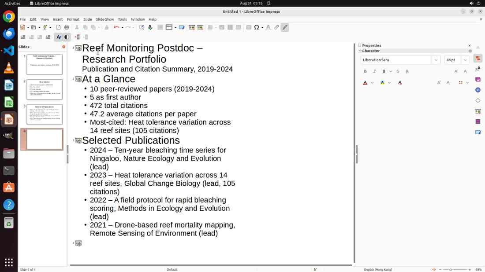
step 47 21:35:57
THINKINGSlide 4 title line ready (44pt). Type the title, then add bullets.
TOOL CALL<tool_call>
<function=computer_use>
<parameter=action>
type
</parameter>
<parameter=text>
Research Focus and Impact
</parameter>
</function>
</tool_call>
EXECUTED (pyautogui in VM)pyautogui.typewrite("Research Focus and Impact")
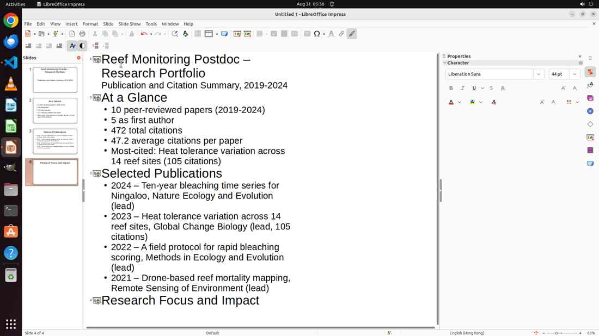
step 48 21:36:36
THINKINGNow add bullets under slide 4. Enter → new title line (slide 5), Tab → demote to bullet under slide 4, then type the focus bullets. Let me do Enter then Tab.
THINKINGNow a bullet under slide 4. Type the three focus bullets.
TOOL CALL<tool_call>
<function=computer_use>
<parameter=action>
type
</parameter>
<parameter=text>
Spans field protocols, drone remote sensing and dispersal modelling
Focused on coral bleaching, thermal stress and reef monitoring
Directly aligned with the monitoring and climate-resilience aims of this postdoc
</parameter>
</function>
</tool_call>
EXECUTED (pyautogui in VM)pyautogui.typewrite("Spans field protocols, drone remote sensing and dispersal modelling\nFocused on coral bleaching, thermal stress and reef monitoring\nDirectly aligned with the monitoring and climate-resilience aims of this postdoc")